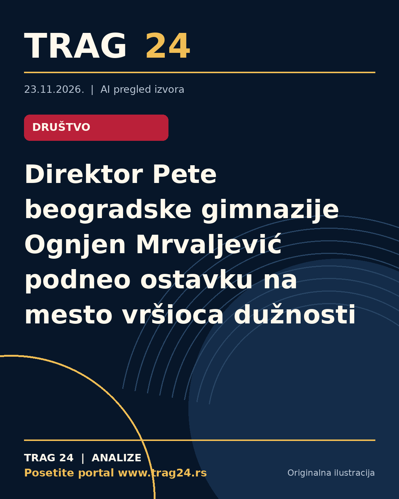

Direktor Pete beogradske gimnazije Ognjen Mrvaljević podneo ostavku na mesto vršioca dužnosti

ŠTA SE DOGODILO
Ognjen Mrvaljević, vršilac dužnosti direktora Pete beogradske gimnazije u Beogradu, podneo je ostavku na tu funkciju. O ostavci je obavestio zaposlene mejlom, kako je izjavila profesorka Jelena Kostić iz te škole. Konkurs na osnovu kojeg je Mrvaljević imenovan v.d. direktora bio je uredan i kompletan, ali postoje najave da bi aktuelni ministar prosvete mogao da poništi taj konkurs.
HRONOLOGIJA
Mrvaljević je postavljen na mesto v.d. direktora škole 24. februara ove godine, nakon čega je u školi bila prisutna dugotrajna kriza. Pre njega je funkciju obavljala Danka Nešović, čiji je mandat bio obeležen problemima i tenzijama, što je dovelo do protesta učenika i njezine smene početkom 2023. godine. Početkom novembra roditelji učenika podneli su krivičnu prijavu protiv Mrvaljevića zbog sumnje u zloupotrebu položaja i drugih dela, a ranije su ga pozivali da podnese ostavku zbog krize u školi.
ŠTA NAVODE IZVORI
Iz Mrvaljevićevog saopštenja upućenog kolektivu škole, on je zahvalio na podršci svojih najbližih saradnika, ali je izrazio razumevanje prema onima koji nisu javno iskazali podršku zbog straha od medijskog pritiska. Istakao je da ne očekuje da o njegovoj budućnosti odlučuju pritisci i ucene aktuelnog ministra prosvete i njegovih saveznika. Roditelji učenika izjavili su da direktor treba da preuzme odgovornost i sam podnese ostavku, dok profesorka u školi potvrdila da je ostavka podneta mejlom zaposlenima.
ŠTA JE POTVRĐENO
Potvrđeno je da je Ognjen Mrvaljević podneo ostavku na poziciju vršioca dužnosti direktora Pete beogradske gimnazije. Takođe je potvrđeno da je konkurs za direktora bio uredan i kompletan, kao i da su roditelji podneli krivičnu prijavu protiv Mrvaljevića. Postoji zvanično saopštenje direktora i potvrda od zaposlenih o načinu na koji je obavestio kolektiv o ostavci.
ŠTA NIJE POTVRĐENO
Nije potvrđeno da je konkurs poništen niti da je ministar prosvete zvanično doneo odluku o tome. Takođe nije utvrđeno da li će biti imenovan novi direktor ili ko će ga naslediti. Nije potvrđeno tačno koji su motivi i okolnosti koje su dovele do podnošenja ostavke, osim navoda iz izjava samog direktora i roditelja.
ŠTA OSTАJE OTVORENO: Ostaje nejasno kako će dalje biti rešavana situacija u Petoj gimnaziji i ko će preuzeti upravljanje školom. Takođe nije poznato da li će nadležne institucije dalje postupati po krivičnoj prijavi roditelja. Neizvesna je i odluka ministra prosvete vezano za konkurs i eventualne promene na funkciji direktora.
Izvori
- https://www.blic.rs/vesti/drustvo/direktor-pete-beogradske-gimnazije-podneo-ostavku-na-tu-funkciju/4146mx2
- https://www.novosti.rs/vesti/politika/1674046/direktor-pete-beogradske-gimnazije-podneo-ostavku-mrvaljevic-nikome-zameram-nedostatak-odlucnosti-javno-iskazivanje-podrske
- https://insajder.net/prenosimo/profesorka-pete-beogradske-gimnazije-vd-direktor-nas-mejlom-obavestio-da-podnosi-ostavku
Ova analiza je pripremljena uz pomoć veštačke inteligencije na osnovu javno dostupnih izvora. Navodi izvora nisu nužno nezavisno potvrđeni.